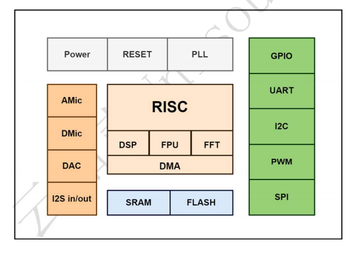
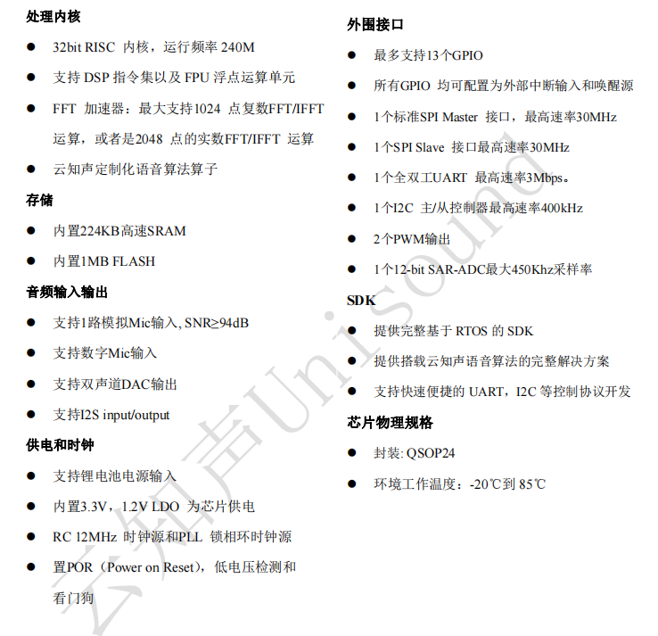

蜂鸟M1
简介
US518P61 是云知声针对大量纯离线控制场景和产品最新推出的低成本纯离线语音识别芯片，依托于云知声在语音识别技术上的积累和算法的不断优化和创新，离线识别算法与芯片架构深度融合，为客户提供超低成本的离线语音识别方案，可广泛且快速应用于智能家居，各类智能小家电，86 盒，玩具，灯具等需要语音操控的产品。
该芯片采用 32bit RSIC 架构内核，并加入了专门针对信号处理和语音识别所需要的 DSP指令集，支持浮点运算的 FPU 运算单元，以及 FFT 加速器。
该方案支持 RTOS 轻量级系统，具有丰富的外围接口，以及简单友好的客制化工具。
功能框图

主要特点
